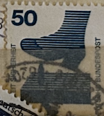
| SOURCE | TITLE| IMAGE MATCH | click to source page |
| Colnect | Stamp: Protruding Nail in Plank (Germany, Federal Republic(Accident Prevention) Mi:DE 700A,Sn:DE 1080,Yt:DE 576,Sg:DE 1602,AFA:DE 1665,Un:DE 576 📮 | 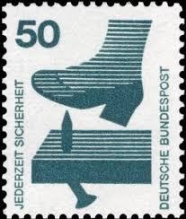 |
| Amazon.com | Amazon.com: Berlin (West) 408A Ra with Black Counting Number unmounted Mint/Never hinged ** MNH 1973 Accident Prevention (Stamps for Collectors) : Toys & Games | 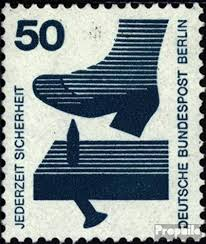 |
| eBay | Germany Scott #9N322, Single 1973 FVF MNH | eBay | 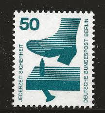 |
| All Numis | Stamps Catalog - List of stamps for 1970-1979 Generic, Germany | 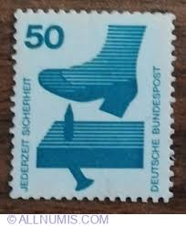 |
| BalkanAuction | Postage stamps | Philately | Collectibles | BalkanAuction | 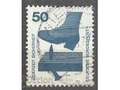 |
| Todocolección | uefa euro 2008 lehmann 30 alemania - Buy Collectible football stickers on todocoleccion | 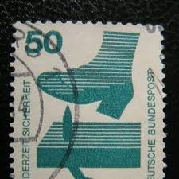 |
| HipStamp | Germany 1080 1972 Used | Europe - Germany & Colonies - Germany, General Issue Stamp / HipStamp | 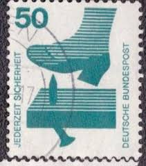 |
| eBay | 1971, Berlin, 408 DZ, ** - 1777134 | eBay | 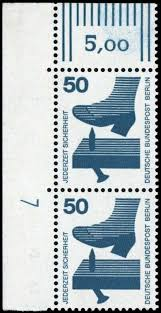 |
| Dreamstime.com | Bad Times for Shoe Footwear Editorial Image - Image of reality, collection: 65448490 | 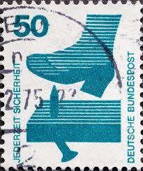 |
| iStock | Postage Stampboots And The Nail Stock Photo - Download Image Now - Black Background, Blue, Boot - iStock |  |
| eBay | West Germany - 1971 - Information About Accidents - 50Pfg - Used - #7 | eBay | 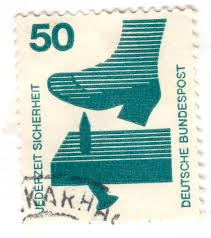 |
| Wie geht es dir heute morgen? Today's Stamp of the Day is this 70+35 pfennig semi-postal stamp from Germany. Issued - 1974 Type - Semi Postal Subject - Youth Work Print Method - |  | |
| Shutterstock | Germany Circa 1971 Cancelled Postage Stamp Stock Photo 2719101609 | Shutterstock | 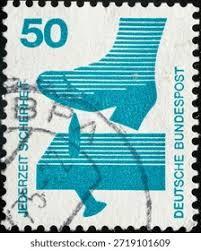 |
| Shutterstock | Protruding Nail Plank On 1973 Germany Stock Photo 2642342301 | Shutterstock | 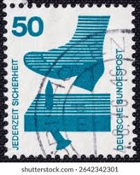 |
| eBay | Germany stamps 1973 Accident Prevention | eBay | 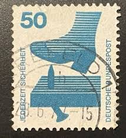 |
| iStock | Canceled West Germany Postage Stamp Ornate Traditional Mailboxes Bundespost Stock Photo - Download Image Now - iStock | 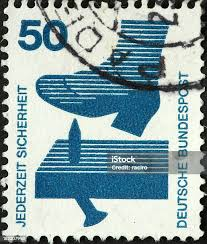 |
| Jace Stamps | Germany Scott 1080 Used - C$0.19 : Jace Stamps, Quality Stamps since 1997 | 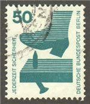 |
| eBay UK | Berlin (West) 408DZ with printing signs unmounted mint / never hinged (9364406 | eBay UK | 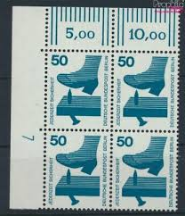 |
| Dreamstime.com | Nail Board for Extreme Yoga Training Close Up and Soft Focus. Stock Image - Image of textile, abstract: 162275359 | 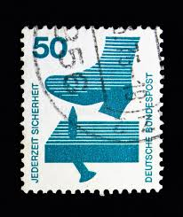 |
| HipStamp | Germany 1080 shoe stepping on nail | Europe - Germany & Colonies - Germany, General Issue Stamp / HipStamp | 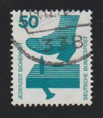 |
| hello, I'm looking for Germany stamps from 1973 (Mi: 700A Rc, 700A Rd, 700A Re) in MNH condition to buy. 700A Rc - back GREEN number 700A Rd - back BLUE number | 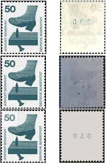 | |
| Amazon.com | Amazon.com: Berlin (West) 408DZ with Printing Signs unmounted Mint/Never hinged ** MNH 1971 Accident Prevention (Stamps for Collectors) : Toys & Games | 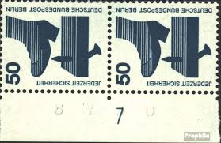 |
| Todocolección | alemania 2005 michel 2457 usado - 12/4 - Buy Other thematic stamps on todocoleccion | 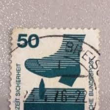 |
| Shutterstock | Vintage Safety Stamps: Over 1,352 Royalty-Free Licensable Stock Photos | Shutterstock | 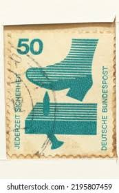 |
| Shutterstock | 31+ Thousand Postage Stamps Germany Royalty-Free Images, Stock Photos & Pictures | Shutterstock | 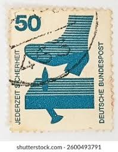 |
| Shutterstock | 5+ Thousand "disabled Stamp" Royalty-Free Images, Stock Photos & Pictures | Shutterstock | 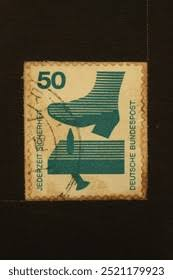 |
| eBay | Germany, Postage Stamp, #1075-1076, 1078-1080, 1082-1084 Mint NH, 1971 (AB) | eBay | 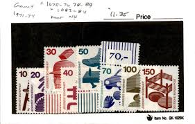 |
| Mystic Stamp | 1074//85 - 1971-74 Germany - Mystic Stamp Company | 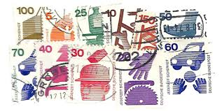 |
| eBay | Germany - Berlin, Postage Stamp, #9N316-21, 9N323-25 Mint NH, 1971 (AB) | eBay | 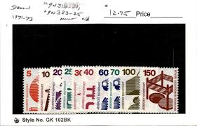 |
| eBay | Germany, Postage Stamp, #1074-1085 Mint NH, 1971-74 | eBay | 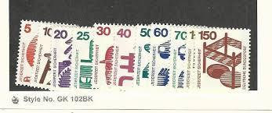 |
| Stamp Community Forum | Switzerland 1949 Grimsel Reservoir Type I And II Identify - Stamp Community Forum | 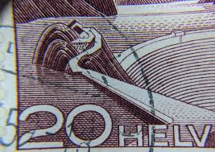 |
| Dreamstime.com | Jederzeit Stock Photos - Free & Royalty-Free Stock Photos from Dreamstime | 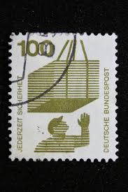 |
| Can you help a newb identify these stamps?and any idea why the one stamp is covered with 800? : r/philately | 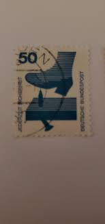 | |
| eBay | Germany, Postage Stamp, #1076, 1078-1079, 1082-1083 Mint NH, 1971 (AC) | eBay | 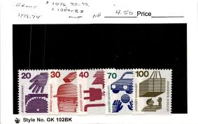 |
| BalkanAuction | Postage stamps | Philately | Collectibles | BalkanAuction | 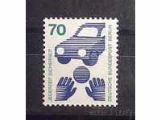 |
| Stamp Community Forum | Switzerland 1949 Grimsel Reservoir Type I And II Identify - Stamp Community Forum | 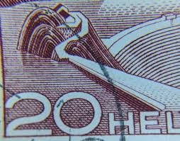 |
| Dreamstime.com | Jederzeit Sicherheit Stock Photos - Free & Royalty-Free Stock Photos from Dreamstime | 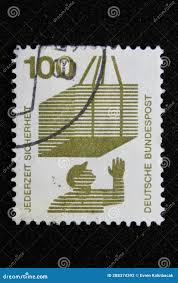 |
| Shutterstock | Karnal Haryana India- September 23rd 2024- Stock Photo 2521179925 | Shutterstock | 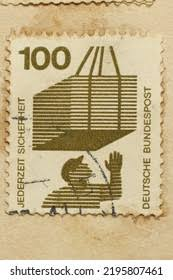 |
| Postage Stamp Guide | Canada's Textile Industry - Light Green - Canada Postage Stamp | 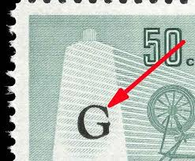 |
| Stamp Community Forum | Collecting By Engraver - Page 85 - Stamp Community Forum | 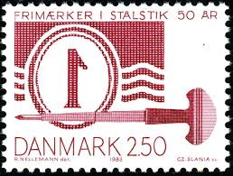 |
| Amazon.de | Prophila Collection BRD (BR.Deutschland) W29 1972 Accident Prevention (Stamps for Collectors): Amazon.de: Toys |  |
| Amazon.com | Amazon.com: FRD (FR.Germany) 773 SR Side Piece (Complete.Issue.) unmounted Mint/Never hinged ** MNH 1973 Accident Prevention (Stamps for Collectors) : Toys & Games |  |
| Mystic Stamp | 1079-82 - 1971-73 Germany - Mystic Stamp Company |  |
| eBay | Berlin Mi Nr.453 70 Pf. paare postfrisch Ballspiel vor Auto 1973 | eBay | 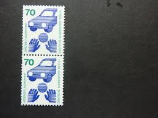 |
| X | InkognyTom (@InkognyTom) / Posts / X | 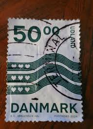 |
| eBay | Berlin Mi.409 xx/MNH, Eckrand-Paar DZ 1, TOP, postfrisch (1971) | eBay | 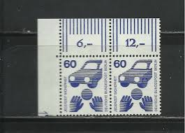 |
| eBay | Germany 1971-73 ACCIDENT PREVENTION, TRAFFIC SAFETY SC 1082 MNH | eBay | 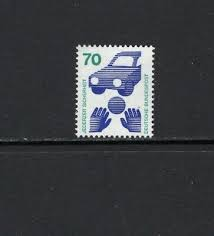 |
| eBay | AUSTRIA, 1976, Stamp 1365, Stamp Day, POSTAL Horn, New | eBay | 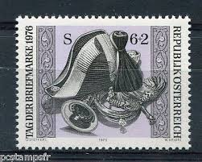 |
| Dreamstime.com | English Writing Editorial Images: Over 788 Stock Photos - Dreamstime | 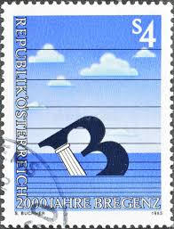 |
| Numista | Sidebar to the outphasing of Danish notes; stamps too, in certain cases – Numista | 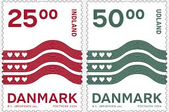 |
| Bob Shop | Germany & Colonies - 1971 BRD MiNr 702 A R with black number on back, used, stamped was listed for 7.70 on 14 Feb at 11:31 by KHB56 in Johannesburg (ID:633980883) | 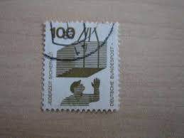 |
| Amazon.com | Amazon.com: FRD (FR.Alemania) k10 1971 Prevención de accidentes (sellos para coleccionistas) : Juguetes y Juegos | 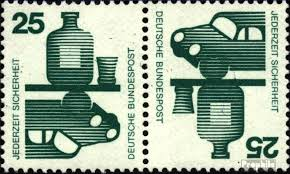 |
| Alamy | DENMARK - CIRCA 1968: stamp printed by Denmark, shows Chemical industry, circa 1968 Stock Photo - Alamy | 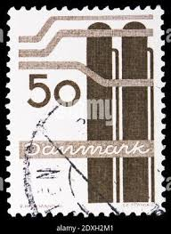 |
| Shutterstock | German Stamp: Over 22,565 Royalty-Free Licensable Stock Photos | Shutterstock | 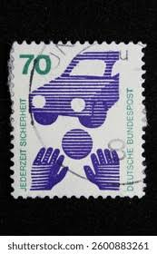 |
| lastdodo.com | Adolf Hitler stamp German Reich with overprint 2 (1945) - Austria - LastDodo | |
| Alamy | Dutch guilder Black and White Stock Photos & Images - Alamy | |
| Dreamstime.com | 3,668 Stamp Safety Stock Photos - Free & Royalty-Free Stock Photos from Dreamstime - Page 6 | |
| Dreamstime.com | 2,263 Soccer Stamp Stock Photos - Free & Royalty-Free Stock Photos from Dreamstime | |
| Dreamstime.com | 14 Cent Stamp Stock Photos - Free & Royalty-Free Stock Photos from Dreamstime | |
| eBay | AUSTRIA-MNH STAMP-2000th ANV OF BREGENZ - 1985. | eBay |